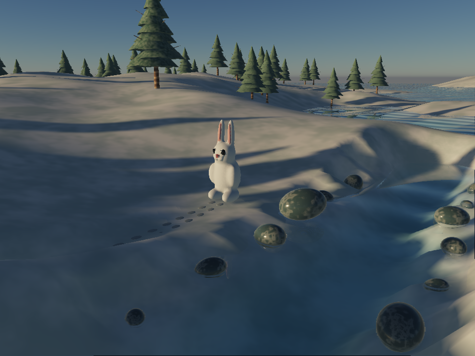
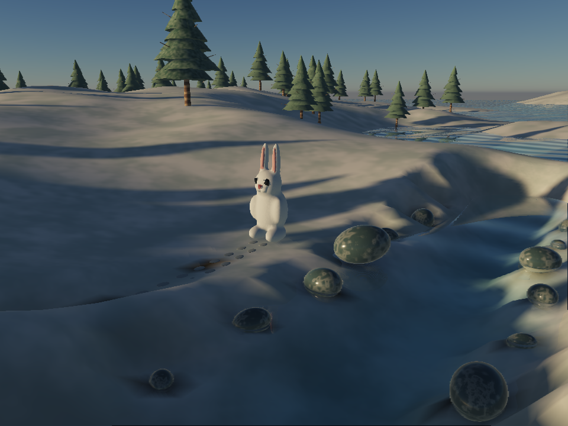

Automatic local sky visibility and reflection occlusion, without world GI. Drag the divider to compare actual captures from the same scene, camera and exposure.


NEW DEFAULTBEFOREWinter measured 10–17% lower GPU time across four runs on Apple Metal at 960×720. Small-scene timings varied substantially and do not establish a universal speedup. Initial preparation still takes several seconds, spread across small work slices. New data fades in when ready.
Sky occlusion improves sheltered surfaces. It does not add color bleeding, moving-object indirect shadows or local mirror reflections. The sealed room still exposes a narrow direct-shadow leak along its edge.